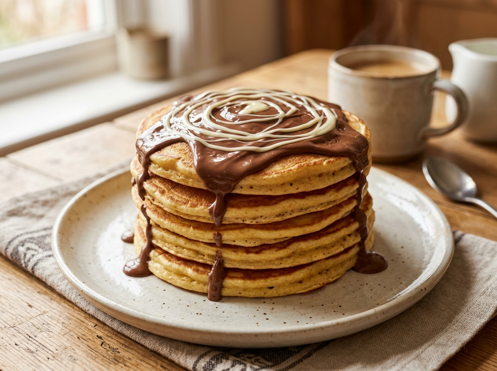

עייפה? אין כוח לחשוב מה לאכול?
במקום לעמוד מול המקרר שעה, לחיצה אחת והאתר יבחר עבורך ארוחה מתוך הרשימה המדויקת שלך – בלי שום מרכיבים שאת לא אוהבת!

הצעה נבחרת ✨
מתוק & חלבון
10 דקות הכנה
פנקייק חלבון פלאפי עם נוטלה ושוקולד לבן
המתכון המדויק שלך: מעדן חלבון PRO, 2 ביצים, 4 כפות קמח, תמצית וניל, ושוקולד לבן מומס יחד עם נוטלה מעל. משביע, מתוק ומרגיע.
טיפ שובע: החלבון מהמעדן והביצים מחזיק אותך שבעה שעות קדימה, והשוקולד נותן את הסיפוק המתוק המושלם בלי שום ייאוש!